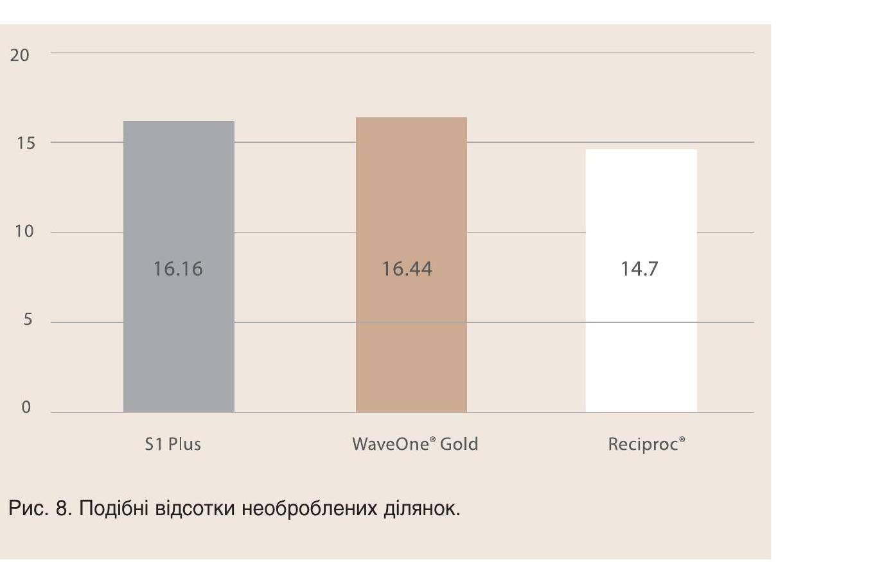

Матеріали Дентсплай Сірона · журнал «ДентАрт» 2024 №4 · Науковий посібник
WaveOne® Gold – ендодонтична система нового покоління. Частина 2
WAVEONE® GOLD SCIENTIFIC MANUAL
Продовження. Початок — «WaveOne® Gold — ендодонтична система нового покоління» (журнал «ДентАрт» 2024 №3).
3. Формування
Ідеальним механічним завданням інструментації кореневих каналів є їх повна механічна обробка з формуванням кореневих каналів, що означає, що всі поверхні кореневого каналу механічно підготовлені.16 Це теоретичне завдання не є досяжним у більшості клінічних випадків, враховуючи складну внутрішню анатомію кореневих каналів.
Тому «формуюча здатність» ендодонтичного інструмента часто описується в літературі, але без чіткої визначеності. Вона зазвичай виражається як мінімальна транспортація каналу, гарна центруюча здатність і достатня кількість видаленого матеріалу зі стінок кореневого каналу під час підготовки при збереженні якомога більше цервікального та радикулярного дентину.
У цьому розділі підсумовані сім наукових досліджень, що досліджували «формуючу здатність» WaveOne® Gold з точки зору транспортації каналу, центруючої здатності, а також вивчали випадки та ступінь тяжкості мікротріщин дентину. Для цього використовувалася мікрокомп'ютерна томографія (мікроКТ), оскільки це передовий метод для аналізу результатів формування каналу завдяки його неінвазивному та відтворювальному аналізу високороздільних сканів до і після лікування.
Оцінка мікроКТ результатів ротаційних і реципрокних систем для підготовки та формування у вигнутих каналах верхніх молярів.22
Автори: Alovisi M., Pasqualini D., Scotti N., Carpegna G., Comba A., Bernardi M., Tutino F., Dioguardi M., Berutti E.
Опубліковано в Odontology, 2022. Jan; 110(1):54–61.
Мета цього дослідження полягала в порівнянні формуючої здатності ротаційних і реципрокних систем для підготовки та формування кореневих каналів за допомогою мікроКТ. Усього було відскановано 30 видалених перших молярів верхньої щелепи до, після підготовки каналу і після формування за допомогою WaveOne® Gold Glider і WaveOne® Gold Primary (WOG-WOG) або ротаційної системи ProGlider™ і ProTaper® Next X1, X2 (PG-PTN) (n = 15). Як іриганти використовувалися 5 % NaOCl і 10 % EDTA.
Вимірювалися збільшення об'єму та поверхні каналу, відсоток видаленого дентину з внутрішньої кривизни, зсув центроїда і зміна геометрії каналу за допомогою відношень діаметрів (ВД, яке характеризує тенденцію інструмента асиметрично розширювати кореневий канал в одному напрямку; значення, близькі до 1, відповідають кращому збереженню оригінальної геометрії каналу) і відношення поперечних перерізів (ВП, яке кількісно оцінює здатність інструмента розширювати простір кореневого каналу; значення, близькі до 1, відповідають зменшенню різниці між вимірюваннями до та після інструментації), які були виміряні на апікальному та цервікальному рівнях і в точці максимального вигину.
Результати
- ProGlider™ у поєднанні з ProTaper® Next і реципрокна система WaveOne® Gold Glider у поєднанні з WaveOne® Gold забезпечили гарне центрування при підготовці каналу, беручи до уваги оригінальну анатомію каналу.
- Аналіз після підготовки каналу (створення килимової доріжки) показав, що в корональній третині ProGlider™ сприяв меншій транспортації. З іншого боку, спостерігалася більш консервативна підготовка з WaveOne® Gold Glider в апікальній третині.
- Аналіз після формування показав значніше збільшення об'єму та площі поверхні з WaveOne® Gold Glider у поєднанні з WaveOne® Gold, що було пов'язано з більшою кількістю «клювальних» рухів до робочої довжини.
| Збільшення об'єму каналу | Збільшення площі поверхні каналу | Рівень аналізу | Видалення дентину з внутрішньої кривизни | Зміщення центроїда (мм⁻¹) | RDR (ratio) | RA (ratio) | |
|---|---|---|---|---|---|---|---|
| PTN | 0.87 ± 0.50a | 2.77 ± 2.04a | Coronal | 11.20 ± 10.39a | 0.61 ± 0.36a | 0.85 ± 0.27a | 2.80 ± 0.50a |
| Middle | 0.73 ± 0.26a | 0.95 ± 0.24a | 1.93 ± 0.62a | ||||
| Apical | 0.45 ± 0.29a | 0.90 ± 0.17a | 1.61 ± 0.34a | ||||
| WOG | 2.14 ± 1.16b | 4.79 ± 3.44b | Coronal | 19.61 ± 9.62b | 1.03 ± 0.37a | 0.49 ± 0.21a | 1.75 ± 1.35a |
| Middle | 1.14 ± 0.41a | 0.66 ± 0.17a | 3.31 ± 1.35b | ||||
| Apical | 0.58 ± 0.45a | 0.96 ± 0.39a | 1.19 ± 1.17a |
Формуюча здатність інструментів з ротаційним і реципрокним рухом в овальних кореневих каналах: дослідження за допомогою мікрокомп'ютерної томографії.23
Автори: de Medeiros T. C., de Lima C. O., Barbosa A. F. A. та інші.
Опубліковано в Acta Odontologica Latinoamericana: AOL. 2021;34(3): 282–288.
Мета цього дослідження полягала у порівнянні за допомогою мікроКТ здатності до формування інструментів WaveOne® Gold (з використанням лише одного інструмента) та Mtwo® (з використанням кількох інструментів) в овальних кореневих каналах.
Усього 30 нижніх овальних кореневих каналів зубів собаки із кривизною від 10 до 20° були просканові до і після підготовки каналу з використанням WaveOne® Gold або Mtwo® до розміру 25 (n = 15), з 2,5 % NaOCl і 17 % EDTA як іригаційних розчинів. Зображення були проаналізовані для кількісної оцінки здатності до формування у відсотках обробленої/необробленої поверхні, транспортації каналу та коефіцієнта центрування.
Основні результати
Обидві оцінювані системи продемонстрували подібну здатність до формування та центрування (див. таблицю 5).
WaveOne® Gold показав значно меншу транспортацію каналу на відстані 5 мм від верхівки у порівнянні з Mtwo® (див. таблицю 6). Це пов'язано з його «золотою» термічною обробкою, яка сприяє створенню мартенситної фази, що є більш гнучкою у порівнянні з традиційними інструментами NiTi, такими як Mtwo®.
| Кореневий канал — WaveOne® Gold | Кореневий канал — Mtwo® | Апікальна третина — WaveOne® Gold | Апікальна третина — Mtwo® | |
|---|---|---|---|---|
| Непідготовлена площа каналу | 7.96 (3.00 – 77.64)A | 10.18 (1.51 – 71.90)A | 11.33 (3.12 – 18.12)A | 11.79 (4.05 – 21.73)A |
| Система інструментів | Рівень (мм від вершини) | Транспортація, середній (min – max) | Здатність до центрування, середній (min – max) |
|---|---|---|---|
| WaveOne® Gold | 3 mm | 0.06 (0.00 – 0.19)aA | 0.05 (0.00 – 0.23)aA |
| 5 mm | 0.07 (0.00 – 1.09)aB | 0.03 (0.00 – 0.12)aA | |
| 7 mm | 0.04 (0.00 – 0.28)aA | 0.03 (0.00 – 0.27)aA | |
| Mtwo® | 3 mm | 0.52 (0.01 – 1.00)aA | 0.52 (0.01 – 1.00)aA |
| 5 mm | 0.42 (0.00 – 0.88)aA | 0.30 (0.00 – 1.00)aA | |
| 7 mm | 0.42 (0.00 – 0.87)aA | 0.48 (0.01 – 1.00)aA |
Оцінка мікротріщин дентину за допомогою мікроКТ після підготовки каналу з використанням термомеханічно оброблених інструментів.24
Автори: Arumugam S., Yew H. Z., Baharin S. A., Qamaruz Zaman J., Muchtar A., Kanagasingam S.
Опубліковано в Aust Endod J, 2021. Vol. 47. Issue 3. р. 520–530.
Метою дослідження було порівняти частоту і тяжкість мікротріщин після формування каналу з використанням ротаційних або реципрокних інструментів NiTi.
40 видалених нижніх премолярів (n=10) у пацієнтів віком від 20 до 40 років були відскановані до і після підготовки з використанням ProTaper® Next, ProTaper® Gold, WaveOne® Gold та Reciproc® Blue (VDW, Мюнхен, Німеччина) до розміру 25 з використанням 3 % NaOCl як іриганта. Було проаналізовано 113000 зображень поперечного перерізу для виявлення частоти мікротріщин, які були класифіковані на три типи тяжкості дефектів:
- Оцінка 1: поверхнева тріщина (від зовнішньої поверхні в дентин).
- Оцінка 2: неповна тріщина (від стінки каналу в дентин).
- Оцінка 3: повна тріщина (від стінки каналу до зовнішньої поверхні).
Результати
- Сканування до підготовки виявило наявність дентинних мікротріщин у 16,7 % випадків, в апікальній третині та середній частині кореня, але не в коронковій третині.
- Сканування після інструментальної обробки не виявило нових тріщин для всіх систем NiTi. Виявлено лише незначне поширення тріщин, яке не було пов'язане з будь-якими змінами в оцінках.
- Не виявлено кореляції між типами дентинних дефектів, рухами інструментів або послідовностями інструментів.
Оцінка за допомогою мікроКТ здатності формування трьох реципрокних однофайлових NiTi систем у кореневих каналах з одним та двома вигинами.25
Автори: Haupt F., Pult J. R. W., Hülsmann M.
Опубліковано в J Endod, 2020. Vol. 46. Issue 8. р. 1130–1135.
Мета цього дослідження полягала у порівнянні за допомогою мікроКТ здатності до формування трьох реципрокних систем NiTi: S1 Plus Standard (Sendoline, Тебю, Швеція), WaveOne® Gold Primary (Dentsply Sirona, Балег, Швейцарія) та Reciproc® R25 (VDW, Мюнхен, Німеччина) у кореневих каналах з одним та двома вигинами.
Загалом було відскановано 75 вигнутих нижніх молярів із 2-ма окремими мезіальними кореневими каналами (по 25 у кожній групі) до і після підготовки за допомогою оцінених систем, використовуючи 3 % NaOCl і лимонну кислоту як іриганти. Зображення були проаналізовані для кількісної оцінки здатності до формування за змінами в геометрії каналу (зміни в об'ємі кореневого каналу і площі поверхні, відсоток обробленої/необробленої поверхні, транспортація каналу та коефіцієнт центрування).
Основні результати
- Усі системи підготовки продемонстрували подібні відсотки необроблених ділянок: S1 Plus = 16,16 +/- 9,79 мм², WaveOne® Gold = 16,44 +/- 8,32 мм² і Reciproc® = 14,70 +/- 7,81 мм² (див. рис. 8).
- Усі системи показали подібну транспортацію та коефіцієнт центрування, до 0,35 мм в апікальній зоні.
- Поломок інструментів не було зафіксовано. Лише один інструмент S1 Plus продемонстрував розкручування після підготовки в S-подібному каналі.
- Усі три досліджені NiTi реципрокні системи однаково з точки зору безпеки та ефективності підготували помірно вигнуті кореневі канали із одним і двома вигинами.

Оцінка за допомогою мікроКТ та порівняльне дослідження формувальної здатності 6-ти нікель-титанових файлів: дослідження in vitro.26
Автори: Perez Morales M. L. N., Gonzalez Sanchez J. A., Olivieri J. G., Elmsmari F., Salmon P., Jaramillo D. E. та інші.
Опубліковано в J Endod, 2021. Vol. 47. Issue 5. р. 812–819.
Формувальна здатність файлів WaveOne® Gold (Dentsply Sirona, Балег, Швейцарія), Reciproc® Blue (VDW, Мюнхен, Німеччина), TruShape™ (Dentsply Sirona, Талса, США), XP-Endo® Shaper (FKG, Ла Шо-де-Фон, Швейцарія), iRace (FKG, Ла Шо-де-Фон, Швейцарія) та TruNatomy® (Dentsply Sirona, Балег, Швейцарія) порівнювалася в помірно зігнутих каналах за допомогою мікроКТ. 10 видалених нижніх молярів (20 каналів у мезіальних коренях) у кожній групі були відскановані до і після препарування, і зображення аналізували для кількісної оцінки формувальної здатності за змінами в геометрії каналу (товщина структури, об'єм кореневого каналу, відсоток обробленої поверхні, центроїди тощо). WaveOne® Gold і TruShape™ обробили найбільшу поверхню каналу (відповідно 73 % і 81 %), тоді як TruNatomy® і XP-Endo® Shaper краще зберегли анатомію каналу порівняно з іншими дослідженими системами, торкаючись відповідно 50 % і 58 % стінок каналу. Водночас було показано, що WaveOne® Gold, як і всі оцінені системи файлів, здатний очищати та формувати канал із мінімальною транспортацією апексу (статистично не вірогідно).
Формування кореневого каналу за допомогою нікель-титану, M-Wire та Gold Wire: порівняльне дослідження інструментів One Shape, ProTaper Next та WaveOne Gold у перших молярах верхньої щелепи за допомогою мікроКТ.27
Автори: van der Vyver P. J., Paleker F., Vorster M., de Wet F. A.
Опубліковано в J Endod, 2019. Vol. 45. Issue 1. р. 62–67.
Метою цього дослідження було порівняти за допомогою мікроКТ здатність до формування трьох NiTi-інструментів у поєднанні з різними техніками підготовки килимової доріжки. Для цього підготовка килимової доріжки за допомогою K-файлів (KF) (Dentsply Sirona, Балег, Швейцарія), файлів One G (OG) (Micro-Mega, Безансон, Франція) та файлів ProGlider™ (PG) (Dentsply Sirona) була випадковим чином поєднана з трьома системами інструментів: ProTaper® Next (PTN, Dentsply Sirona), One Shape (OS, Micro-Mega) та WaveOne® Gold (WOG, Dentsply Sirona).
Загалом 135 мезіобукальних каналів верхніх молярів (n = 15 на групу) були відскановані до і після препарування, і зображення проаналізовані для визначення здатності формування з точки зору змін геометрії каналу, транспортації та коефіцієнта центрування.
| Система | Апікальна третина, Mean ± SD | Апікальна третина, Min. – max. | Середня третина, Mean ± SD | Середня третина, Min. – max. | Корональна третина, Mean ± SD | Корональна третина, Min. – max. |
|---|---|---|---|---|---|---|
| KF/OS | 0.52 ± 0.36 | 0.058 – 1.276 | 0.49 ± 0.29 | 0.002 – 1.178 | 0.33 ± 0.27 | 0.096 – 1.166 |
| KF/PTN | 0.55 ± 0.41 | 0.068 – 1.543 | 0.45 ± 0.34 | 0.082 – 1.275 | 0.35 ± 0.34 | 0.025 – 1.443 |
| KF/WOG | 0.59 ± 0.35 | 0.033 – 1.421 | 0.43 ± 0.30 | 0.125 – 1.415 | 0.52 ± 0.33 | 0.156 – 1.418 |
| OG/OS | 0.53 ± 0.28 | 0.103 – 1.353 | 0.44 ± 0.25 | 0.76 – 1.043 | 0.35 ± 0.32 | 0.051 – 1.296 |
| OG/PTN | 0.56 ± 0.33 | 0.068 – 1.167 | 0.50 ± 0.39 | 0.004 – 1.377 | 0.37 ± 0.29 | 0.062 – 1.143 |
| OG/WOG | 0.60 ± 0.32 | 0.115 – 1.376 | 0.45 ± 0.29 | 0.122 – 1.328 | 0.56 ± 0.16 | 0.301 – 0.855 |
| PG/OS | 0.55 ± 0.33 | 0.103 – 1.254 | 0.54 ± 0.35 | 0.002 – 1.271 | 0.34 ± 0.28 | 0.059 – 1.197 |
| PG/PTN | 0.60 ± 0.32 | 0.144 – 1.334 | 0.47 ± 0.29 | 0.43 – 1.223 | 0.44 ± 0.34 | 0.043 – 1.168 |
| PG/WOG | 0.62 ± 0.33 | 0.121 – 1.276 | 0.44 ± 0.29 | 0.136 – 1.279 | 0.58 ± 0.34 | 0.089 – 1.301 |
Головні результати, які подані у таблицях 7, 8, 9, можна підсумувати таким чином:
- Коефіцієнти центрування були подібні для всіх груп.
- Поєднання ProGlider™ з підготовкою WaveOne® Gold продемонструвало найменшу транспортацію каналу в апікальній третині, середній та корональній третині кореневого каналу.
- Поєднання ProGlider™ з підготовкою WaveOne® Gold показало найменші зміни об'єму каналу.
- Поєднання K-файла з ProTaper® Next для препарування продемонструвало найбільшу транспортацію в апікальній третині, середній та корональній третині.
- Незалежно від використаного інструмента для створення килимової доріжки, ProTaper® Next показав найбільший обсяг видаленого дентину.
Отже, поєднання ProGlider™ з WaveOne® Gold для препарування продемонструвало корисні можливості формування стосовно таких характеристик: транспортація, коефіцієнт центрування та видалення дентину.
| Система | Апікальна третина, Mean ± SD | Апікальна третина, Min. – max. | Середня третина, Mean ± SD | Середня третина, Min. – max. | Корональна третина, Mean ± SD | Корональна третина, Min. – max. |
|---|---|---|---|---|---|---|
| KF/OS | 0.107a ± 0.046 | 0.035 – 0.219 | 0.118a ± 0.036 | 0.036 – 0.174 | 0.167a ± 0.037 | 0.084 – 0.259 |
| KF/PTN | 0.096b ± 0.033 | 0.030 – 0.168 | 0.132b ± 0.038 | 0.050 – 0.219 | 0.172b ± 0.040 | 0.072 – 0.270 |
| KF/WOG | 0.078 ± 0.025 | 0.037 – 0.128 | 0.093 ± 0.021 | 0.053 – 0.128 | 0.148 ± 0.036 | 0.074 – 0.212 |
| OG/OS | 0.083 ± 0.020 | 0.054 – 0.128 | 0.113c ± 0.027 | 0.060 – 0.162 | 0.158 ± 0.027 | 0.133 – 0.230 |
| OG/PTN | 0.085c ± 0.026 | 0.035 – 0.136 | 0.107 ± 0.030 | 0.050 – 0.157 | 0.161 ± 0.032 | 0.127 – 0.250 |
| OG/WOG | 0.068 ± 0.026 | 0.022 – 1.126 | 0.093 ± 0.027 | 0.049 – 1.127 | 0.147 ± 0.029 | 0.130 – 0.203 |
| PG/OS | 0.081 ± 0.020 | 0.041 – 0.127 | 0.089 ± 0.023 | 0.052 – 0.151 | 0.154 ± 0.026 | 0.093 – 0.201 |
| PG/PTN | 0.084 ± 0.023 | 0.030 – 0.128 | 0.104 ± 0.033 | 0.23 – 0.171 | 0.151 ± 0.030 | 0.091 – 0.221 |
| PG/WOG | 0.065d ± 0.026 | 0.040 – 0.136 | 0.086d ± 0.020 | 0.054 – 0.120 | 0.140c ± 0.027 | 0.072 – 0.202 |
| Метод формування | Середнє значення | Стандартне відхилення | Мінімальне значення | Максимальне значення |
|---|---|---|---|---|
| KF/OS | 3.034a | 0.903 | 2.053 | 5.629 |
| KF/PTN | 3.456b | 1.394 | 2.013 | 6.581 |
| KF/WOG | 3.078a | 0.567 | 1.882 | 3.822 |
| OG/OS | 3.211a | 1.263 | 1.672 | 5.346 |
| OG/PTN | 3.616b | 1.228 | 1.180 | 5.445 |
| OG/WOG | 3.025a | 1.097 | 1.453 | 5.342 |
| PG/OS | 2.875a | 0.772 | 1.692 | 4.274 |
| PG/PTN | 3.631b | 1.674 | 1.709 | 7.143 |
| PG/WOG | 2.646a | 1.518 | 1.027 | 5.755 |
Синхротронне випромінювання на основі мікроКТ для аналізу мікротріщин дентину при використанні ротаційних та реципрокних файлових систем: дослідження in vitro.28
Автори: H. Vemisetty H., Priya N. T., Singh B., Yenubary P., Agarwal A. K., Surakanti J. R.
Опубліковано в J Conserv Dent, 2020. Vol. 23. Issue 3. р. 309–313.
Метою цього дослідження було оцінити за допомогою мікроКТ частоту виникнення мікротріщин у дентині після формування каналів за допомогою 4-х нікель-титанових систем: ProTaper® Gold (Dentsply Sirona, Балег, Швейцарія), Hyflex EDM (Coltеne-Whaledent, Альтштеттен, Швейцарія), Reciproc® (WVD, Мюнхен, Німеччина) та WaveOne® Gold у видалених зубах на основі синхротронного випромінювання (СВ-μКT).
Загалом було досліджено 40 видалених нижніх молярів з викривленими коренями у пацієнтів віком від 40 до 60 років (по 10 на кожну групу), які були проскановані до та після підготовки каналів до 25-ого розміру, використовуючи 2,5 % NaOCl як розчин для іригації. Було проаналізовано 81747 зрізів для визначення частоти виникнення мікротріщин.
| Система | Загальна кількість зрізів | Кількість тріщин | Відсоток |
|---|---|---|---|
| ProTaper® Gold | 20 301 | 399 | 1.965 |
| Hyflex EDM | 21 984 | 200 | 0.909 |
| Reciproc® | 19 310 | 256 | 1.325 |
| WaveOne® Gold | 20 152 | 210 | 1.042 |
Головні результати, подані в таблиці 10, можна підсумувати таким чином:
- Дуже мала кількість мікротріщин спостерігалася для всіх систем інструментів.
- Не було виявлено кореляції між типами дефектів дентину, рухами файлів або послідовністю використання файлів.
Основний висновок про WaveOne® Gold та його характеристики щодо формування кореневих каналів
Щодо здатності до формування кореневих каналів, то WaveOne® Gold показав результати, аналогічні іншим файлам, зберігаючи початкову кривизну каналу і не створюючи нових мікротріщин у дентині. Більше того, він може навіть перевершувати інші системи файлів за ефективністю видалення дентину зі стінок каналу при використанні разом з інструментом для формування килимової доріжки.23,24,27 Однак дослідження, підсумовані вище, підтвердили, що системи інструментів з нікель-титану, з ротаційним або реципрокним рухом, не здатні контактувати із 100 % стінки кореневого каналу. Такі результати є очікуваними і відповідають іншому рецензованому опублікованому дослідженню, яке засвідчує, що після механічних інструментів залишається необробленою понад 35 % поверхні каналу, що здебільшого пов'язано з анатомічною складністю системи кореневих каналів.29
Ці необроблені ділянки можуть містити біоплівку, яка здатна повторно колонізувати систему кореневих каналів, що негативно впливає на результати лікування. Тому ефективна іригація є ключовим елементом для повного очищення каналу, забезпечення дезінфекції, розчинення та видалення пульпи, дентинних залишків, змазаного шару, мікроорганізмів та продуктів їх життєдіяльності.30 У цьому контексті іригаційна голка Dentsply Sirona (конусність 4 %, калібр 30, закритий кінчик, робоча довжина 27 мм) може бути дуже корисною. Голка виготовлена з м'якого поліпропілену, що дозволяє їй легко згинатися і слідувати анатомії кореневого каналу. Крім того, двосторонній вентиляційний дизайн забезпечує збалансований об'єм іригаційного розчину, що дозволяє краще контролювати процес іригації по всьому каналу.
Закінчення у наступному числі журналу.
Переклав Максим Скрипник